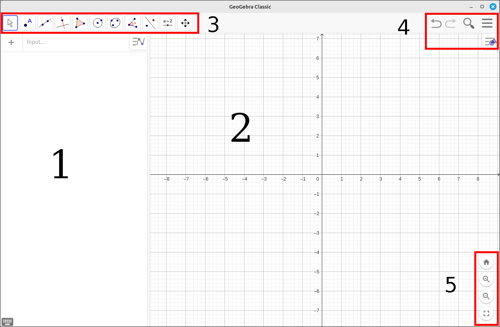
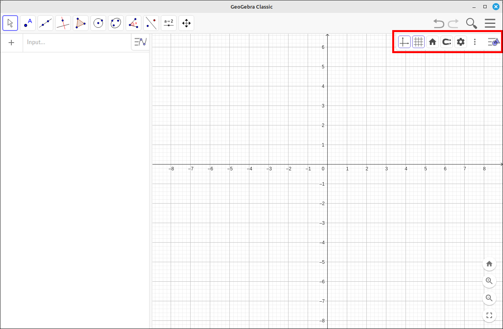
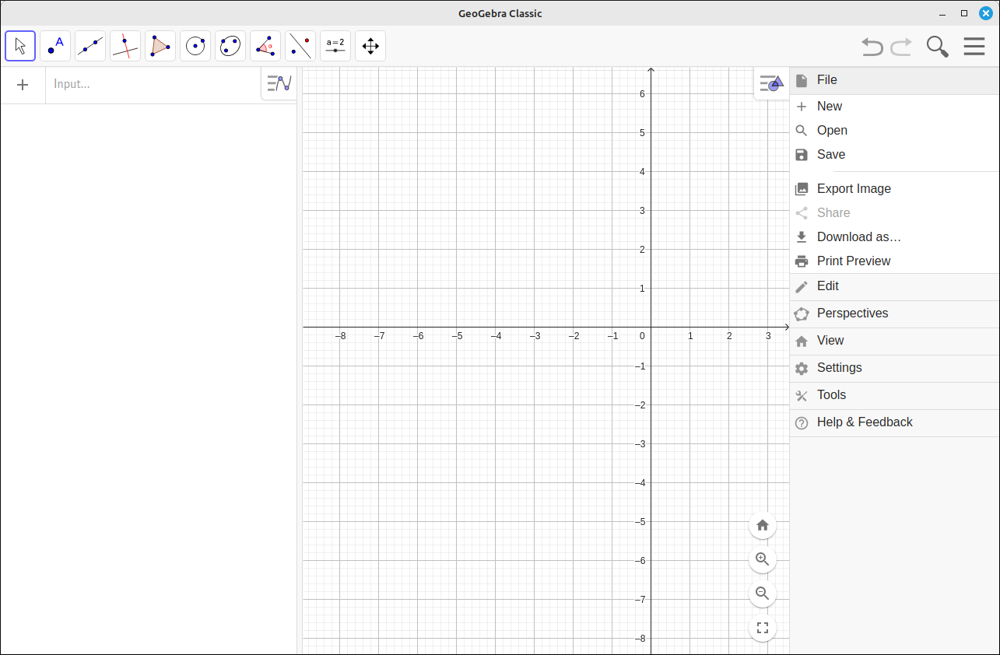
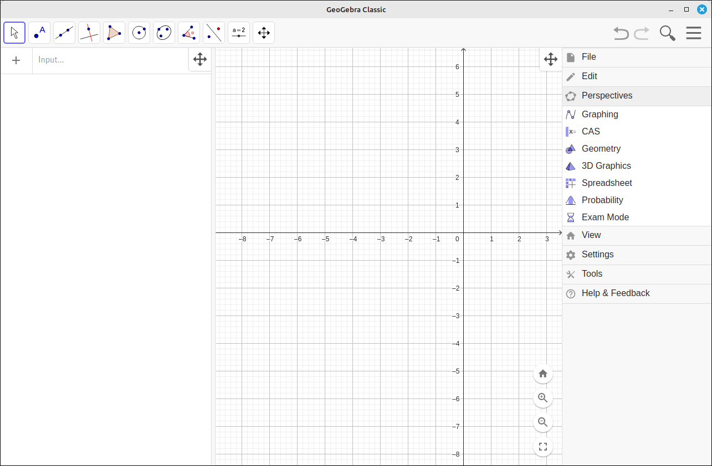
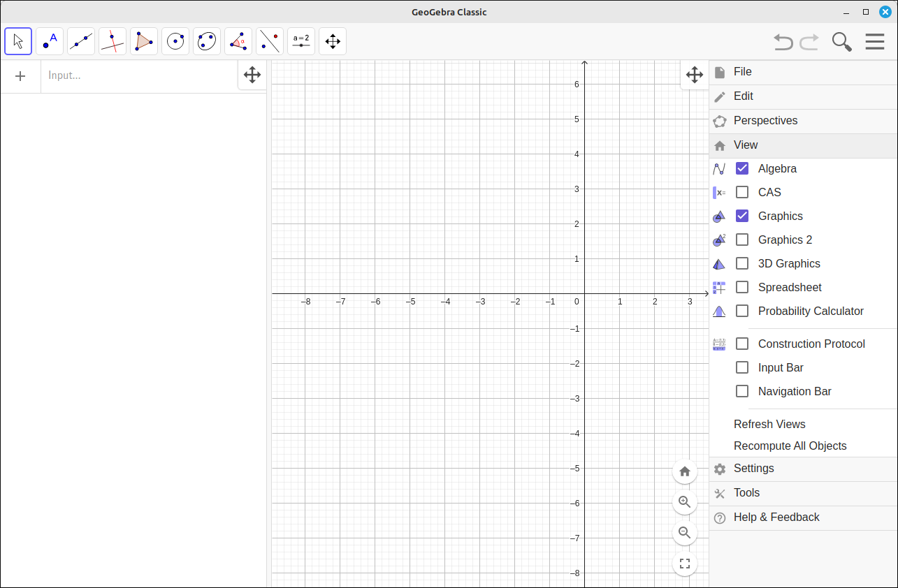
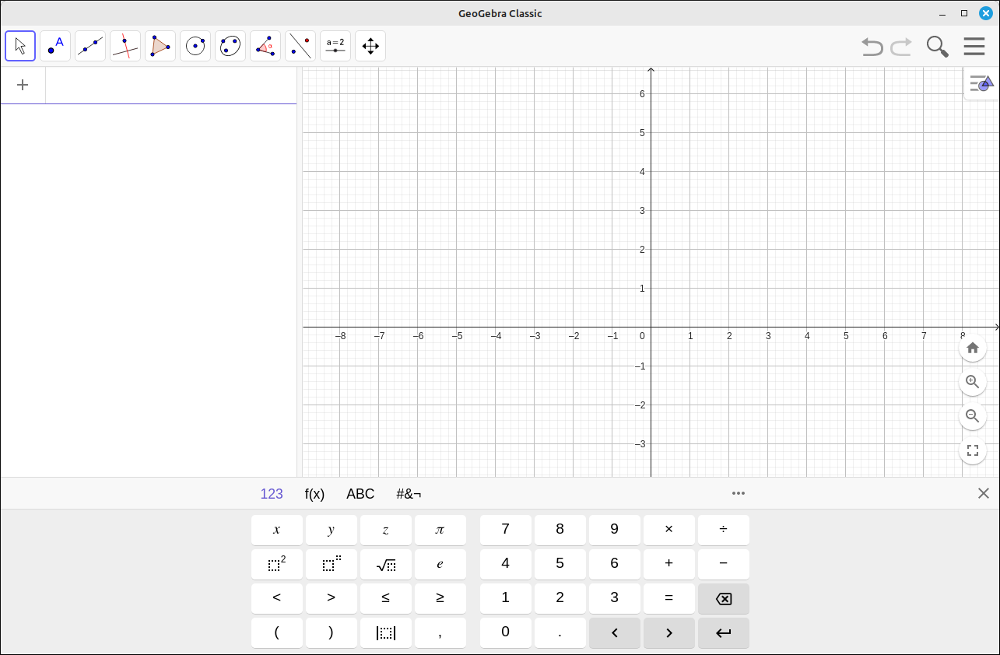
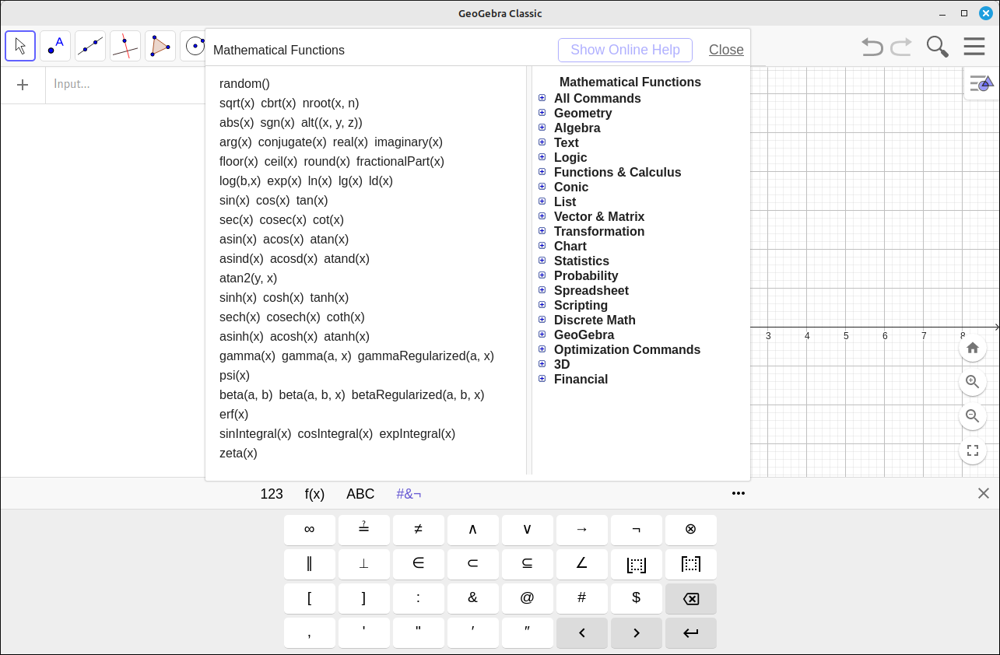

Introduction to GeoGebra#
This discussion and set of examples is to simply get you familiar with the workings of GeoGebra. GeoGebra is a fantastic visualization and experimentation software package. I have used it for each of the classes in our Calculus sequence, including Algebra and Trigonometry, and Linear Algebra. In addition, I have used the spreadsheet and curve fitting facilities for our data structures classes in computer science.
The GeoGebra Website has downloadable versions of their software as well as an online interface that requires no installation process. In addition, the website contains thousands of GeoGebra worksheets that can be downloaded, manipulated, and used for both in-class instruction and exploratory assignments.
In these tutorials and examples we are not going to use the worksheets from the GeoGebra website. We will use the base functionality of the program so that the user can obtain the skills to construct their own examples, demonstrations, and explorations. The content of this page is to give a general overview of the basic functionality that is needed before going into the specific areas.
Program Installation#
You can use GeoGebra in a completely online interface at the following links. The GeoGebra Classic Online version is closer to the GeoGebra Classic interface that we will be using for this set of tutorials.
You can also download and install local versions of the GeoGebra software.
Windows installation programs can be found at GeoGebra Windows Installers
All install packages are at GeoGebra Installers
Program Layout#
The version of GeoGebra that we will be using for these examples is the classic desktop version 6.0. The online version has a similar layout as do older versions of this program, with some minor differences. It should not be too difficult to adapt these instructions to the specific version you are using.
The Input Panel: This panel contains all the inputs into the program. Each entry has its own input/edit box along with a small menu of options. The editing boxes use a WYSIWYG style editor that does take a little getting use to but is quick and reduces syntax, such as parentheses around sections of expressions like numerators and denominators.
Graphics View: This is where the graphs of the functions and regions are displayed. GeoGebra was designed to be very dynamic for exploring geometry and algebra. Through the tutorials and examples we will explore many of these features to better understand the mathematics behind the manipulations.
Tools Selection Toolbar: This is the set of tools that are at your disposal. Each tool is really a set of tools. When you click on a tool you will see a list of all the tools in that category. Although the majority of these are for exploring geometry we will use some of these for exploring calculus.
Menu and Settings: The menu button will open up the programs menu options that will allow you to change perspectives, view tool panels, save and load your work to files, etc.
Scene Zooming Tools: These allow you to zoom in and out, reset the the window, and switch to full-screen mode. In addition,
- In 2-D View Mode:
Left click and drag will pan the coordinate system.
The mouse wheel will zoom in and out.
Holding the shift key and left click and drag on an axis will scale the axis independently of the other.
- In 3-D View Mode:
Left click and drag will rotate the coordinate system.
The mouse wheel will zoom in and out.

Program Layout Image 1#
If you click on the settings icon you will get a small settings toolbar for the view settings. These will allow you to quickly toggle axes, the grid, capture style, and several other options. For more specific options click on the settings icon (cog). This settings menu will change depending on what object is selected. For example, if a curve is selected then this menu will change to one that will allow you to change the color, style, and label options for the line.

Program Layout Image 2#
The main menu icon (three horizontal lines) will open the menu system for the program. Once you select the option category (such as, File, Edit, Perspective, …) a sub-menu will open with specific options in that category. The ones you will probably use most often are File, Perspective, and View.
The File menu will allow you to save and load your work to a file. You can also export an image of the current graph to a file or to the system clipboard.

Program Layout Image 3#
The Perspective menu will allow you to change the mode of the program. By default, the program opens up into a 2-D graphing mode. You will be using this most often when working on the Differential Calculus and Integral Calculus tutorials. If you move on to Multivariable Calculus or Linear Algebra you will frequently change the mode to 3D Graphics.

Program Layout Image 4#
The View menu allows you to add in tool panels without changing the entire perspective. For some applications, you may need to open the spreadsheet tool. You can also view 2D and 3D side by side, although this can be a bit cramped on smaller computer screens.

Program Layout Image 5#
If you click in an input box in the input panel on the left, an editing panel appears that has several modes. The toolbar above the keypad will allow you switch between numbers, functions, qwerty keyboard, and special symbols.

Program Layout Image 6#
Also the three dots icon on the far right of this toolbar will open up the function quick help system that shows you all of the functions you have available for input. Clicking on any if these will load the function syntax into the input box, you can also type in the function name from the keyboard.

Program Layout Image 7#